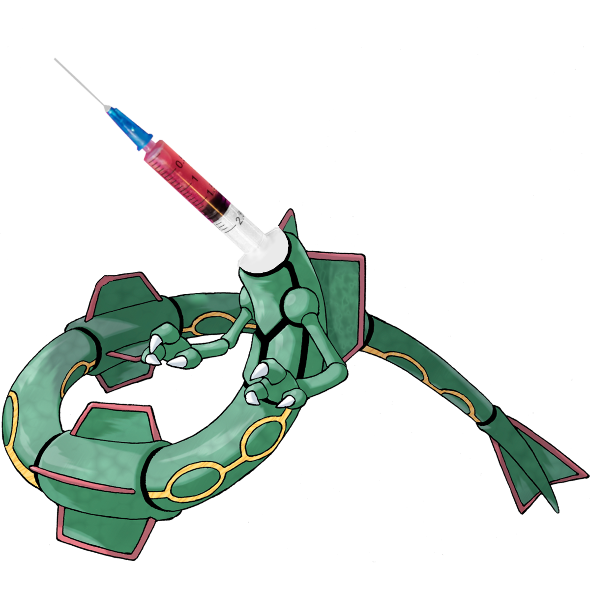
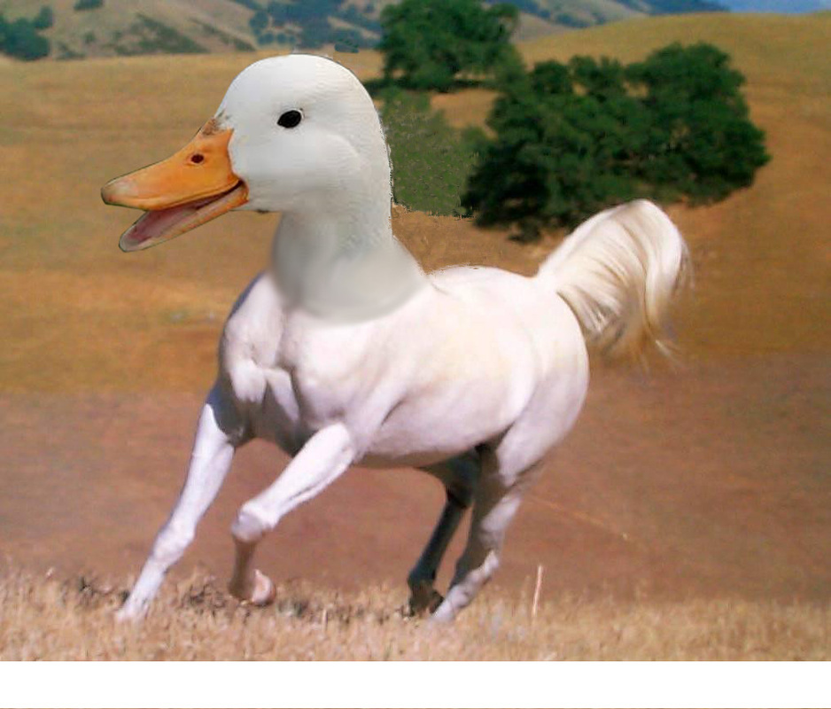

GoalsTBWE6 Goals
TBWE Discord
Dababy VS Whatsapp Car
5/26/2021

Dababy has been attacked by whatsapp car. He will fight it... to the death (of him or another participant, results may vary).
Best Anime Battle of all time
Chug Jug With AI AkiArc
5/25/2021

AkiArc (Alaric) has sung Chug Jug with You, or rather an AI has copying his voice has. It did a bad job at synthesizing his voice; it barely sounds like him and it skiped some words. I also tried this with Morshu and Big Smoke, but it skiped too many words. However, I made some better input data, so I can make the AI sound better. The input data I used was Alaric saying he hated 3D Tetris and Rick Astley (he must have been rickrolled or something?)
AkiArc VS AI "I would rip my eyes out"Chug Jug with AkiArc (AI)
He Boiled for your Sins
5/24/2021


The Church of the Flying Spaghetti Monster is a religion that is almost as good as The Church of Festivus. The Flying Spaghetti Monster is a real religion (thanks to New Zealand) that exists and I did not make up.
WikipediaWebsite
Have I ruined the Beaver?
5/23/2021


These may show up in the school newspaper.
TBWE Discord
5/22/2021

TBWE, as of yesterday, has a Discord server!
Also Discord changed their logo.
The Best Judge
5/21/2021

This judge is great. He has no idea how a computer works, let alone what they do.
School Mystery Meat is kinda sus ngl
5/20/2021
AMOGUS
Have I ruined anime?
5/19/2021

Fullplastic Brewery is the name of it, right?
Future!
5/18/2021

Squidward has gone to the future and is stuck there now. Everything is made of chrome. There are many descendants of Spongebob and Patrick. I found this image a VHS I digitized. Is that possible? No this is Patrick.
Who's Joe?
JOE MAMAThis just in! Cheney Tech student named Cameron was almost murdered by a groundhog. He still doesn't know who Joe is!
4D Tetris
5/17/2021


4D Tetris is a real game that was made for Sega's Dreamcast console. It is a tetris game that I can only describe as a boomer trying (but failing) to be 'hip' in the 2000s. This takes up one GB of SSD space.
Scam Numbers
5/16/2021

Don't you love when your working on something important, then all of a sudden your called by someone who says they want to extend your car warranty, but you don't have a car. I subject them to the art of "Rick Rolling". Rick ends up saying, you know the rules, SAY GOODBYE. Someone requested me to add "Indian Scammer numbers" to my website (Alaric? Javoni?) so here are two links:
R/ScamNumbersownagepranks
Dababy has turned into a convertible and has entered SAOBR!
School Internet Does not Suck!!!
5/13/2021

This test was conducted at school, in the science wing on 5/13/2020 around 8:20 AM. The school has incredibly fast internet speeds. The problem is the terrible hardware. The chromebooks they gave us cannot process data the quickly.
Edit: I forgot about the ludicrous amount of spyware. That certainly slows them down.
AMURICA!!!!!
5/12/2021

This is the most sterotyical American to ever exist. I bet this is what non-Americans think Americans look like.
Llanfairpwllgwyngyllgogerychwyrndrobwllllantysiliogogogoch Rediscovered
5/11/2021
Llanfairpwllgwyngyllgogerychwyrndrobwllllantysiliogogogoch is love,
Llanfairpwllgwyngyllgogerychwyrndrobwllllantysiliogogogoch is life,
See this guy say it here!
Stop Using Toilet Paper!
5/10/2021

Karen please. I have a family too, I need the toilet paper more than you do. You have a throne of toilet paper whist I have a square.
Microwaved Taco Wednesday!
5/9/2021

Rick Astley says that emoji tacos are better than school tacos.
Jif or Gif?
5/8/2021

Is it Jif or Gif? That's the question that has plagued scholars for millennia.
JFIF
5/7/2021

JFIF is the best image format. Sure GIMP and Photoshop probably don't support it, but it's funny.
Raptor in the Shower
5/6/2021

This raptor was found in your shower. It turns out the shower belongs to the raptor. So does the house you live in. It bought both of them.
Einstein is Vietnamese?!?!?!?!
5/5/2021

Einstein is Vietnamese I guess.
You wanna CD? Go call Einstein!
Chicken Harness!
5/4/2021

Who brings a dog with them when they could bring a chicken with them.
Mr. Orange Joins the Battle!
5/3/2021

Yesturday, I animated Mr. Orange, this horrifying monstrosity. This is sort of Alaric's fault, as he told me to use the Smash Bros "INSERT NAME joins the battle!" format.
Tsar Bomba!
5/2/2021


TBWE used to manufacture Tsar Bombas. The story from TBWE4 is:
"TBWE has humble beginings. We started as a Tsar Bomba factory in the USSR. We then we shut down because we were sued. Our bombs did not have a warning that said "this may go boom if rocks are thrown at it."
TBWE is now a game site. There are NO TSAR BOMBs MADE HERE!"
I found a meme!
5/1/2021

I found a meme! I found this when I was checking several episodes from the Simpsons to make sure they ripped correctly. I rip, or copy, video files from DVDs and Blu-Ray discs and copy them to a server a my home. Sometimes, if the disc is dirty or scratched, the video gets ruined (corruption normally but sometimes shortening), so I have to check them to make sure.
You know the rules...
4/30/2021

You know the rules, SAY GOODBYE!
Alaric's Computer
4/29/2021

Alaric, with his potato computer, tried to run Minecraft. It failed and the computer melted. True story(?). It has Intel Potato Graphics, 4 GB Ram, 2 Core processor running at 1.2 GZ, and of course 50 GB of hard drive storage. It is sad when a Pi 2 is stronger than your main computer.
Edit: According to Alaric his computer was worse than that. I am so sorry for him and the pain he must have gone through trying to use that.
Heist: Cat Food Store
4/28/2021

Cat plans to steal all the cat food in a cat food store.
Doctors Hate Him!
4/27/2021

With this one weird trick!
Adobe Seasoning
4/26/2021

Mmm... Adobe Seasoning. Goes great on salmonella infested chicken. Adobe Seasoning is the replacement for Adobe Flash Player.
P is for Pterodactyl!
4/25/2021

P is for Pterodactyl!
Quantum Proofs
4/24/2021

This looks like me learning proofs.
ALARIC FELL UP (AND DOWN?) ON STAIRS!!!
4/23/2021
Alaric fell up stairs. He said it was "embarrassing". Do you know who else fell up stairs? Joe Biden. Alaric is Joe Biden in hiding confirmed. He wanted me to change it to he fell down the stairs. Also elgooG has been added to the games page.
Rate My Setup
4/22/2021

Who doesn't connect a keyboard and muse to their phone? It makes typing and running DosBox much easier. So far I have two ratings, 10/10 and 15/10.
JUST IN!!!!: Alaric Cannot Steal Chairs!!!!
4/21/2021

You heard it right, Alaric cannot steal a chair. He failed to steal one when he promised to steal it. This is a tragedy. He is bad at stealing chairs.
i tried
4/20/2021

"i tried is my motto!" - Proto (maybe)
I created a new website, Proto Dance! I have also added a historical seasonal page for all old seasonal pages. I have also updated the seasonal page, as per request of Alaric. Request a seasonal page by either asking me or by going to the contact page!
Nvinda Gefarce REX 3070.8
4/19/2021

Imagine not using Intel's Potato RTX 3080.
EAT THE SILICA GEL!!!
4/18/2021

Silica gel tastes good, but they don't want you to know that. They say it doesn't so that you don't eat it, so that they can eat it!
Karen Wants me fired
4/16/2021

I started selling this on my store and Karen called me racist for selling it. She demanded to speak to my manager.
Fart Water
4/15/2021

How to make Fart Water
- Fill water heater with water
- Let it sit for 7 months
- Run the tap
- smell the farts
The water smelt horrible. The only way to get rid of it was to drain it, and in order to do that the heater needs to be shut off and you need to turn on the hot water valves. The small house will smell entirely like farts in 10 minutes.
True story.
Well, That is True
4/12/2021

I would not recommend 2020 either. It kinda sucked. I did get new new computer then at least (which is 8928 times more powerful than a chromebook). I did however find another crazy shopping website here by typing a quote said by a famous man, Philip J Fry, "Shutup and take my money!"
Yo yo yo *rapping sounds*
4/11/2021

Yo yo yo it's me, hoodie cat, coming at you with an amazing rap song!
Get Your Shotquaza!
4/10/2021
Shotquaza is the new legendary Pokemon added in the DLC for Pokemon Dagger and Pokemon Forcefield, which is the Island of Crown. He will come for you unless you get vaccinated.
The name's Astley, Rick Astley
4/9/2021

Rick Astley is the best undercover agent.
Vote For David!
4/8/2021
David is running for vice president! What? Am I too late? Oh. That was last year. Oh. Well... still vote for him! I found his old 'vote for me' website and a few of the edited ones I made. The edited ones are now on the history page. Check one out here!
Or check out the orignial here!
.................It's
4/6/2021

Monty Python's Flying- oh wait- Quest for the Holy Grail!
NEW VIRUS DISCOVERED (NO VACCINE)
4/5/2021

Proto says: iloveyou bad virus
And the Neil Bold font has been added
Disappointment Island Discovered
4/4/2021

I was swimming around Old Zealand, and I found Disappointment Island. As seen here.
Another crazy shopping website
4/3/2021

I have found another website selling crazy things through Google Images.
Game Page Update
4/2/2021

I have updated the games page. Whist I didn't add any games, I added a game recommendation system that you should check out. I also added links to the flash and emulation pages.
Happy- what day was it?
4/1/2021
Click here to see the old image
Rick Astley is ravaging our society today. He is rolling everywhere. Even 9/10 Rick Astleys recommend that you buy Rick Astley Toothpaste! E
Rick Astley for President
3/31/2021

Rick Astley is running for president for the USA. Sure, he's not an American citizen, and he isn't even in America at the moment, but he's running for president! Vote Astley - He'll never give up up, let you down, run around, or desert you.
CRITICAL ALERT!!!
3/30/2021

There are not enough Rick Rolls on this website! This is a international emergency. I will try to fix this. To add your name to the "Add More Rick Rolls Petition" click here!
{kind=link}
Bacon Soda!
3/29/2021

You heard it right, bacon soda! That and many other amazing sodas are sold here and on my shop!
Globglogabgalab Reluctantly Added to SAOBR
3/28/2021
I reluctantly added this horrible monster called Globglogabgalab to SAOBR at the request of Alaric. If you don't know what Globglogabgalab is, he is an animated character from a weird movie that became a meme back in 2018. He normally has 2 arms, but while I was making the gif for him, this happened, and I decided that this would be used in SAOBR. This is currently in the game, but unused.
SAOBR: MS Paint Update
3/23/2021

SAOBR has had a few significant updates. The Install Wizard has now been added. No, it's not an installer, he's an NPC. The Install Wizard is PS1 Hagrid Astley in an MS Paint wizard hat. He floats above an island. The Geico Gecko has been added. He floats next to the install wizard. Now if you fall into the void, you will respawn! Checkpoints in the style of VHSs have been added. If you pass by one it will 'record' your progress. If you fall into the void, you will respawn at the last VHS you passed.
Where's Waldo?
3/22/2021

I found a compressed where's waldo, so that you can't find him *evil laugh*. There is someone who removed Waldo from a where's waldo, he ended up in jail. See more here!
We have been out since around 3-12-2020. Over a year, corona has ravaged the world.
See, I told you
3/21/2021

Bender is drinking a Moxie, so it is the best soda. You cannot argue with that.
Moxie is the Best Soda
3/20/2021

Moxie is the best soda. Sure, almost all the people I know that don't live in Maine hate it, but still it is the best. You'll get used to the aftertaste, I promise. Moxie is a soda that was once a medicine, but now is a soda. It is popular in Maine.
A Correct Representation 2020
3/19/2021

Ah, 2020. We thought you would be better than 2019, but of course, no. I miss going outside without a mask.
oops my system crashed
i lost my deeta
but i had an antivirus
antivirus is not enough
you need protegent
world's only antivirus with deeter recovery software
think beyond antivirus think protegent
War Crime: Cereal with Water
3/18/2021

The Geneva Convention has classified water in cereal as a war crime. Any Cameron- I mean person that eats cereal with water is now a war criminal.
BEAVERS!!!!
3/16/2021

Beavers! Beavers are large reptilian birds that live in tundras. They commonly eat lobster, iron, and houses. They make their homes in the tops of pine trees. Beavers have been threatened by the legendary beaver collector Don.
Elon Musk Deletes Coronavirus!!!
3/14/2021

Elon Musk has deleted coronavirus. Earlier today, Elon bought all the shares of coronavirus and absorbed it into his company. He later deleted it because it was not profitable enough.
Proto save me owo
3/13/2021

I can't believe that in the first season of the Proto Anime, they lose D E E T A, and never find them agian. And in the third season virus trojan rootkit are all gone forever! And in season 10 Proto saves random guy from his angry boss. Oops, I forgot to say spoilers.
SAOBR Update
3/12/2021

A few days ago I have added a new character to SAOBR, Mafia Grunt Palkia! You may be wondering why the Pokemon that controls space is a lower rank than an egg laying pink blob. This is because Mafia Boss Chansey started the mafia. Palkia is animated an is in the newest distibuted version of the game (3-11-2021). I have created a trailer featuring Palkia. It will soon be released on my SAOBR channel. In other news, due to Alaric's 'amazing' wallpaper, I will animate tem sans. I might also add fighting to the sans and Muffet battle simulators.
I have the Infinity Gauntlet
3/11/2021

I have obtained the totally real infinity gauntlet. No, it is not a rubber glove with ring pops glued to it, it is an actual infinity gauntlet. When I figure out how to snap my fingers while wearing it, I will destroy half of all ring pops- I mean half of all life. I found this because of a youtube ad. It is the first one I willingly clicked.
Buy one here!
Review: "I can finally wash my dishes while wiping out half of mankind. Really helps me multitask and get through my to-do list faster! thanks"
I am Proto, your security is my motto
3/8/2021

It's Proto! I have added 3 protegent related images to this website, Proto Rap MP3, and this news article! I found a scam website for McAfee, so like any normal person I stole its code and created a Protegent scam website. You can find it in the links section.
ET Needs your help!
3/1/2021

That's right, ET needs YOUR help! You need to help him find all of the chunks of the letters E T. Also I added many images to this website including rick astley gifs. My amazing new video, AkiArc's 3D Tetris - Rickastleyized, will be coming out on the 3rd at 1pm, at the moment it is premiering here!
Sinnoh Remakes Confirmed!!!!!!
2/27/2021

Finally, after years of pestering them, Pokemon has annouced Sinnoh remakes! Click here!
And they also announced Pokemon BOTW! While it's not a remake, I'm still calling it that. It is a prequel to Diamond and Pearl. Find out more here!
So finally, I can create an army of bidoofs on Switch!
URGENT: Big Smoke wants a Number 9
2/25/2021
"Can I have a numba nine" - Big Smoke
POG
2/24/2021
I have added a lot in the last few days. I have added almost all 2019-(early) 2020 email images. I have added many images and files from my google drive. I have found and added images in the chrome drive background backup folder. I have added DS, N64, and GBA emulation. Fonts have been added to downloads. TBWE5 won the best website ever award. The Ji PNG language page has been added. Links to my and AkiArc's (Alaric's) YouTube channels have been added. Alaric's 'virus' has been added. SAOBR related audio has been added. Mafia Boss Chansey trailers have been added. We are now selling "friendliness pellets" and elastic bands. CompUSA group images have been added to SAOBR cinimatic universe page. And finally, the 3D model of Waldoheadman has been added.
PS5 Emulation?!?!?!?!?
2/18/2021

After hours of work, I have finally created a web based PS5 emulator. It's laggy and sort of glitchy, but most games are playable. I recommend that you check it out here.
￣\_(”ノ)_/￣
Email Images Added
2/16/2021

I have copied most images from old emails in my old school gmail acount and have uploaded them to this website. There are about 15 of them. Can you find the all?
Emulation Update
2/14/2021

I have added a siginfigant amount of games to the emulation pages. I have also added many systems, including the Sega 32x, Entex Adventure vision, Colecovision, arcade, Epoch Game Pocket Computer, and the Gameboy Color. I have also started to work with an Adobe Flash emulator, so flash games might make a return to this website!
Major Update
2/13/2021

I have finished development on the 3D and Audio pages! Audio has been removed from downloads and many audio files from IST projects have been uploaded. I have added many images to main page 3 and prephotoshop. I am now selling Gamestop Stonks and Rick Rolls in the shop! I have started using google drive to host large video files, so on the videos page I added a section called non-local, which contains several videos that were not on this website and were not on my youtube channel.
Online Emulation Released!
2/12/2021

I have finally released a working online emulation pages! I will be adding more systems and games over time. In the coming days, I will also rewrite the 3D, audio, and games pages to use a similar system to the game switching system the emulation pages are using. A few emulated games I added are Doom, Sonic (1-3), Tetris(es), ET (Game of the Year), and Pacman(s).
Rare Image
2/11/2021

There is a giant mircowave in the basement of Cheney Tech that "cooks" all the food there! It can microwave metal and ruin the texture of chicken!
This just sums up 2020
2/10/2021

I found this and it just sums up 2020.
Good News
1/30/2021

The games and emulation sections of this website will now be supported! I will be adding such amazing games such as slope and ET (Atari 2600)! Also I have started to work on a 3D viewing page, so soon this website will have more 3D models than just Fatman TM with logo!
Legal Emuuuuuuuuuuuuuuu! (and Dave)
1/28/2021

This dou is called Legal Emuuuuuuuu!!!! (and Dave). Those of you who claim it is Limu Emu (and Doug) will be sent to re education centers.
Special Announcement from Morshu
1/27/2021

I can't give credit,
Come back when you're a little
mmmmmmmmmmmmmmmmmmmmmmmmmmmmmmmmmmmmmmmmmmmm
richer.GBA Romhack
1/24/2021
I have created a GBA romhack and have added it to the downloads section of this website! A Game Boy Advance romhack is an edited version of a game. I created this romhack and themed it after Pokemon Go. I recommend that you try it, but if you don't want to AND as long as you don't care about spoilers, go here to see gameplay!
Mafia Boss Chansey
1/20/2021
Mafia Boss Chansey has legitimately taken control of this website. Rob has given control to Mafia Boss Chansey by his own free will. PLEASE HELP!
More Images
1/19/2021

I have added 17 new images to the website, all from my IST backgrounds folder.
Best Welcoming to a Website
1/18/2021

I found this while searching for information about an old computer company called Wang Computers. The unfortunately named company made word processing computers.
Online Emulation Halted
1/13/2021

Adobe flash player is dead. The emulator I was using for the emulation section no longer runs in browsers. I am halting the development of the emulation sections of this website and may be removing them in the future. I have found alternatives to flash, but they are laggy and cannot be hosted locally on this website. There is still hope for online emulation, even though it will take a lot longer than it would have.
A Horrible Day for the Internet
1/12/2021

Today is a sad day, for Adobe Flash Player is now dead. Adobe discontinued it and flash games will no longer run in browsers. This will effect the games page and the online emulation effort. They will most likely end as well. I will be taking down my 2020 April Fools prank site as well. See why they did this here. :(
Online Emulation Start
1/10/2021

I have started to work on my online emulator again. To learn more about emulators go here! I had started to work on one awhile ago, but stoped as it was too hard maintain. Now that I know some javascript, I decided to start it again.
Super American Online Bros - Remastered
1/9/2021

I have started to work on a new video game, Super American Online Bros - Remastered. The original Super American Online Bros is broken, it will not load correctly anymore, so I decided to scrap it, as it would take more effort to fix than it would take to recreate. Also since it was my first unity project, I did some things stupidly that I will avoid this time. If for some reason you want the assets I am using, you can download them on the Unity Assets page of the Gallery! New acronym for Super American Online Bros - Remastered = SAOBR
Sans Fight Animation!
1/4/2021

I have created a Sans fight animation here!
Audio does not work in Google if the page is reloaded or bookmarked! Use Microsoft Edge (Internet Explorer but edgy)
The start of 2021!?!?!?
1/1/2021

2020 was fun, right? Hopefully 2021 will be funnerer, with less coronavirus, murder hornets, toilet paper shortages, Australian wildfires, violent protests, mass quarantines, and very controversial elections!
Happy New Years! Festivus!
Yes, I am writing this at 12:20 AM 1/1/2021
End of 2020!?!?!?
12/31/2020

2020 was fun, right? We had coronavirus, murder hornets, toilet paper shortages, Australian wildfires, violent protests, mass quarantines, another very controversial election, and the release of TBWE5!
SANS!
12/30/2020

Papyrus will love the new font I added.
NYEH HEH HEH!
Festivus from Google
12/29/2020

I assumed that you celebrated THIS when I told you to celebrate the other Festivus!
Main Festivus Day
12/21/2020

It's that time of year again, it is time for (main) Festivus! No, I'm not talking about the Festivus from Seinfeld. I'm talking about Festivus, the one with the white pines, you know the one I may or may not have made up. To celebrate Festivus, you have to get a white pine tree and put it in your house. Throw away your Christmas tree. Merry Festivus to you all!
Update: Images
12/15/2020

I have added many images (mainly Mark TM or Notepad++). Go to the gallery section to check them out!
Done!
12/11/2020

This website is complete! Now you can play some old flash games! Or watch WIDE FATMAN! Or even download viruses!
Almost Done!
12/10/2020

This website is almost complete! Also you are is has been hacked by Sans.
Edit: TBWE5 Will be released tomorrow!
Gallery
12/9/2020

The gallery section has had massive improvements and is now almost complete. Also I have started to work with a 3D api, so Fatman will be on the website soon!
Fatman!
11/30/2020

Fatman is the best superhero to ever exist. His power is waddling. He can waddle at amazingly slow speeds!
TBWE5 in Development!
11/18/2020

Yes, TBWE5 will be ready soon. No more TBWE4.
Twitters
Protegent UnistalGlobal